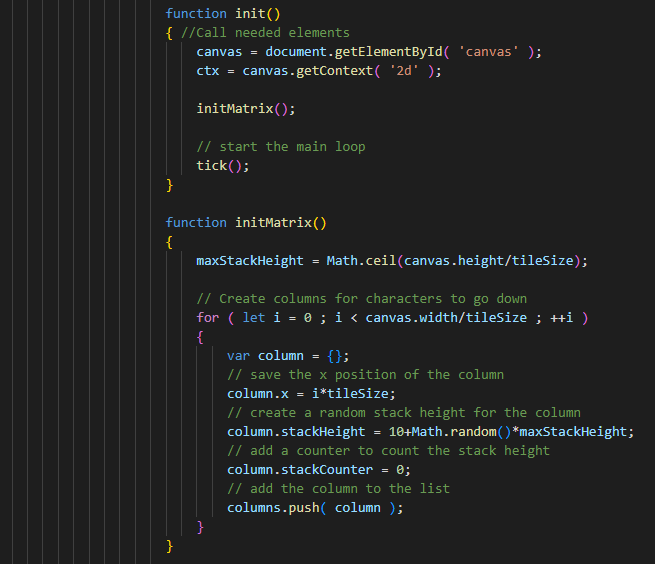
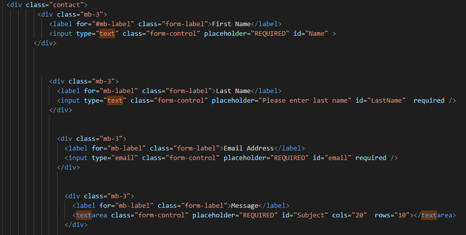
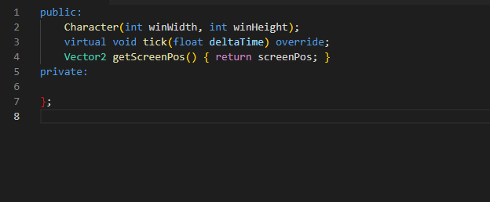
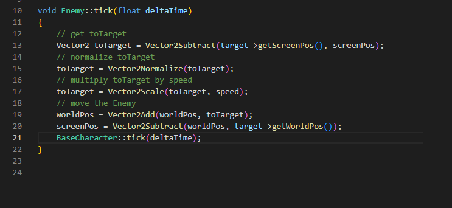

JavaScript
This snippet of code was taken from the Javascript coding I used for the animated background of this
webpage.
As you can see the animation is initiated by a function, which first of all sets the height of each
character column by dividing the height of the canvas by the tilesize. It then goes into an infinite “for
loop” that adds a column of random height with each iteration, each column increasing the width of the
canvas. What makes this “for loop” infinite is it will continue to increase the canvas width with each
iteration, thus meaning that the counter value (i) will never be more than the canvas.width value, which
is the argument.

SQL
Below is a link displaying a movie database, I have created a reprosentational query to display my knowledge
of the SQL programme and how it is used in data clottectytion, maintenance etc.

HTML
This snippet of code is the html to my contact page from this website,
As you can see each input field is child element (.mb-3) with its own unique ID,
within a parent element(“.contact”). Tho the input fields look similar on screen,
this differential is required when different attributes and properties need to be attached
to each child element. This was very important in the scenario when it came to applying Regex
as each field had its own specific Regex variable. Not only this , each field differed in label name ,
field size etc. It was vital to gain access to each field as an individual.

C++
This snippet of code has been taken from the C++ coding I am using for my game . This code is a snippet of
basic enemy AI,
it tells the enemy character where the player is and updates that coordinate with every loop iteration,
this allows the enemy to react accordingly. This is made possible by first obtaining and returning the
location of the main character
and storing it inside a variable (similar to javascript). In this case the variable being "ScreenPos"(main
characters position on the screen).
We then need to work out the distance between the enemy and the main character. This arithmatic is worked
out by the Raymath library I have installed and is updated with every loop iteration (:tick),
The basic math is taking the distance between the player and the starting coordinate (0,0) and subtracting
the distance of the enemy from the starting location. This gives the programme the distance between the
enemy and the player, which is then stored in the toTarget variable.
Not only are C++ and raylib/raymath brilliant for game design, thier arithmatic properties lends them
well to any website that requires frequent updating with certian mathematical values.

